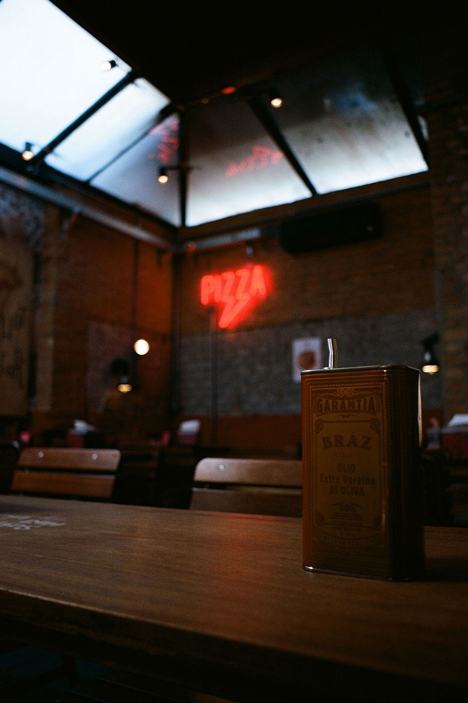

C'est le meuble devant lequel votre pizzaïolo passe la totalité du service. Mal choisie, une table de préparation pizza vous coûte des secondes sur chaque pizza — et en coup de feu, les secondes s'additionnent vite.

Une table à pizza réfrigérée réunit trois équipements en un seul meuble. En haut, une vitrine à bacs gastronormes réfrigérés qui présente les garnitures à hauteur de main. Au centre, un plan de travail — le plus souvent en granit — pour étaler et garnir. En dessous, une réserve froide fermée à portes ou à tiroirs, où dorment les bacs à pâtons et les recharges de la soirée. Le pizzaïolo ne quitte jamais son poste : c'est tout l'intérêt.
Sauce, mozzarella, jambon, légumes, herbes : chaque ingrédient dans son bac gastronorme, refroidi par un groupe dédié ou par le froid ventilé de la table. Le couvercle relevable ou coulissant limite les pertes de froid et protège des projections. Comptez de 7 à 15 bacs selon la longueur du meuble et la richesse de votre carte.
Entre 30 et 45 cm de profondeur utile devant la vitrine : c'est là qu'on abaisse le pâton, qu'on nappe et qu'on garnit. Trop étroit, on garnit à moitié sur la pelle ; trop large, on s'éloigne des bacs et on perd le geste. La bonne largeur, c'est celle qui laisse la pizza entière à plat devant vous.
2, 3 ou 4 portes — ou des tiroirs, plus ergonomiques pour sortir les bacs à pâtons. C'est votre stock du service : de quoi tenir sans courir en chambre froide toutes les vingt minutes. Certaines tables acceptent directement les bacs à pâtons de 60 × 40 cm, ce qui change tout au quotidien.
Le bon réflexe : partir de votre nombre de pizzas au coup de feu, pas de la place disponible. Une table trop courte oblige à empiler les bacs et à sortir du poste, ce qui casse le rythme du service.
| Format | Longueur | Portes / tiroirs | Bacs GN en vitrine | Cadence adaptée |
|---|---|---|---|---|
| Compacte | 1 100 à 1 400 mm | 2 portes | 5 à 7 bacs GN 1/3 | jusqu'à 40 pizzas / service |
| Standard | 1 500 à 1 800 mm | 3 portes | 8 à 10 bacs GN 1/3 | 40 à 90 pizzas / service |
| Grande | 1 900 à 2 300 mm | 4 portes | 11 à 15 bacs GN 1/3 | 90 à 150 pizzas / service |
| Double poste | 2 × 1 800 mm | 2 × 3 portes | 2 × 10 bacs | au-delà de 150 pizzas |
Les profondeurs courantes vont de 700 à 800 mm, pour une hauteur de plan de 850 à 900 mm — mesurez la hauteur de travail par rapport à votre équipe, pas au catalogue. Et pensez au dégagement : une table réfrigérée a besoin d'air. Un groupe logé côté droit exige 5 à 10 cm de respiration contre le mur ou le meuble voisin, faute de quoi il tourne en surchauffe et consomme deux fois plus.
C'est le plan de référence pour la pizza, et pour de bonnes raisons : il reste naturellement frais, il n'accroche pas la pâte, il encaisse la farine et le grattage à la corne sans se rayer, et il ne se déforme pas. Sa masse absorbe aussi les à-coups du façonnage. Seul point de vigilance : c'est une pierre, elle se fend si on l'agresse avec un choc thermique ou un objet lourd tombé de haut.
Imbattable sur l'hygiène : lisse, non poreux, il se désinfecte en un passage. En revanche, il colle davantage — il faut fleurer plus — et se raye visiblement au fil des mois. Beaucoup de configurations mixtes règlent le débat : un bandeau de granit là où l'on abaisse le pâton, de l'inox partout ailleurs pour le nettoyage.
La table réfrigérée est le point de contrôle le plus regardé lors d'une visite d'hygiène : produits ouverts, exposés, manipulés en continu.
Réserve basse entre 0 et 4 °C, bacs de garniture entre 2 et 6 °C. Une vitrine trop chargée ou laissée ouverte pendant tout le service dérive vite au-delà de 8 °C : c'est là que les ennuis commencent.
Un relevé écrit par jour, au minimum, à l'ouverture et en fin de service. Un thermomètre intégré à la table ne dispense pas d'une sonde de contrôle indépendante — c'est elle qui fait foi si l'affichage dérive.
Bacs datés et étiquetés, rotation stricte, jamais de recharge à chaud posée dans un bac déjà froid, couvercles refermés dès la fin du coup de feu, nettoyage complet des bacs et des joints chaque soir.
Un détail qui compte à l'achat : privilégiez une table dont les bacs et les glissières se démontent sans outil. Un meuble qui se nettoie facilement se nettoie effectivement — et cela vaut aussi pour les joints de porte, qu'il faut pouvoir extraire et laver.
Fourchettes hors taxes sur du matériel neuf, hors livraison et mise en service.
| Configuration | Longueur | Équipement | Prix indicatif HT |
|---|---|---|---|
| Table 2 portes | 1 100 – 1 400 mm | Vitrine simple, plan inox | 1 200 – 2 000 € |
| Table 3 portes | 1 500 – 1 800 mm | Vitrine réfrigérée, plan granit | 2 000 – 3 200 € |
| Table 4 portes | 1 900 – 2 300 mm | Grande vitrine, granit, groupe renforcé | 3 000 – 4 500 € |
| Version tiroirs à pâtons | 1 500 – 1 800 mm | Tiroirs bacs 60 × 40 cm | 2 600 – 4 000 € |
| Bacs GN et couvercles | — | Jeu complet inox ou polycarbonate | 150 – 500 € |
Ce budget se raisonne toujours en même temps que celui du four à pizza et du pétrin : sur une ouverture, le trio four + pétrin + table représente le socle de l'investissement. Notre page matériel de pizzeria complet reprend l'ensemble de la liste, poste par poste.
Largeur des portes, angles de couloir, marches : une table de 2 mètres ne passe pas partout.
Une prise dédiée 230 V, jamais partagée avec le four électrique ni avec une multiprise.
5 à 10 cm de dégagement côté groupe, et surtout pas contre la source de chaleur du four.
Table, four et plonge en triangle court : le service se joue en nombre de pas.
Ce dernier point vaut d'être creusé au moment des plans, en même temps que l'installation du four et de l'extraction. Un poste bien pensé, c'est deux mètres de marche en moins par pizza — soit plusieurs kilomètres sur une soirée chargée.
Longueur, nombre de bacs, plan granit : décrivez votre besoin, un fournisseur CHR vous répond.